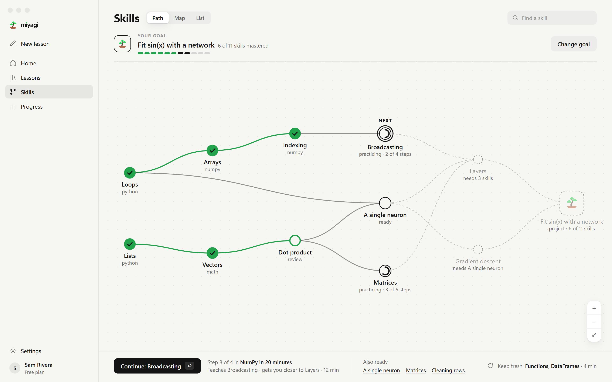

Research, mockups in light and dark, the data the engine needs, and the build plan. Before any code, as you asked.
Adrian · for Michael

| Product | How it shows progress | What we take |
|---|---|---|
| Duolingo | Moved from a tree you chose from to one path (2022) to cut confusion and build review in. Engagement stayed "equivalent". Choice and overview were lost; users petitioned. | Path as the default, but keep the map and a way to test out. |
| Khan Academy | Attempted, Familiar, Proficient, Mastered. Progress counts only Proficient and up. Weekly streaks. The big knowledge map was retired and people still ask for it. | Count mastery, not completion. Weekly rhythm. Don't demote. |
| Math Academy, ALEKS | A knowledge graph. You choose from the "frontier": topics whose prerequisites you know (about 93% success there). Practicing an advanced topic reviews the simpler ones inside it. | Show the frontier. Using a skill reviews it. |
| Exercism | Concept exercises unlock practice exercises by tags. Learning mode gates; practice mode opens everything. Hidden multi-concept rules confuse people. | Say what a locked node needs. Gating is a default, not a wall. |
| Codecademy, Trailhead | Paths end in portfolio projects. Superbadges are 8-14 hour applied challenges behind prerequisites. | A real project at the end of every branch. |
| Boot.dev, Sololearn, Mimo | XP, chests, leagues, hearts. Mimo found learn, practice, come back beats finishing a section in one go. | Skip the loot. Spacing is built into "mastered". |
| Path of Exile, roadmap.sh | Huge webs. Experts love them; newcomers find them daunting and follow outside guides. | Never open on a field of 100 dashed circles. |
| FFX sphere grid | Looks like an 828-node web, plays almost linearly. | A web on screen can hide a path underneath. |
| Skyrim, Factorio | Skills grow by real use. Factorio's "do the thing" techs failed when the game didn't say what to do. | miyagi already watches real use. Every node says how to earn it. |
People speed up near a reward. A card with 2 of 12 stamps filled beat a blank card of 10 (Kivetz 2006). So: a visible goal, counted down.
Early on, show what's done; near the end, show what's left (Koo and Fishbach 2012). "6 of 11 mastered" now, "2 skills to go" later.
Slow-moving bars early raise drop-off (Villar 2013). "1 of 300" is slow. The path shows 6-15 skills, not all of them.
A broken streak lowers later engagement (Silverman and Barasch 2023). Weekly rhythm, never shown as broken.
Mastery learning gains about 0.5 SD. Spaced, mixed practice beat blocked practice 72% to 38% (Rohrer 2014). Mastered means passed on 2 different days.
It grows with complexity and unclear preferences (Chernev 2015), which is a novice facing a big tree. One NEXT, three alternatives.
Expected rewards tied to completion undermine motivation (Deci 1999). Gamification's effects are small. "You can do this now" beats loot.
Specific, hard goals beat vague ones (Locke and Latham 2002). Every branch ends in a named project.
Sprawl, states that look alike, review debt piles, demotion, hidden unlock rules, hearts and leagues, progress reshuffled when content changes.
Full report with every source linked: research/skills-tree/RESEARCH.md (on the draft PR).
Dashed, faint. Says what it needs: "needs 3 skills".
Solid ink outline. Prerequisites mastered.
Ink arc inside the ring: the evidence so far. "2 of 4 steps".
The only green. Passed unassisted on 2 different days.
Still mastered, so still green, but hollow. Any later use fills it again. Never demoted.
A rounded square with the bonsai. Same state rules.
Exactly one node carries NEXT: a ring offset 3px and the word. The page's one primary button points at it ("Continue: Broadcasting"), with why under it ("Teaches Broadcasting · gets you closer to Layers · 12 min"). Up to three "also ready" links keep a choice without a blank page.
The engine picks NEXT in this order: a lesson in progress, then a frontier lesson on the goal path that also uses a due skill, then the frontier lesson closest to the goal, then a short review.
Lowercase miyagi. Green only for mastered. No red, yellow or blue. No glows or confetti. Pastels only on option buttons (Explain is sky). Track names are plain small caps, not colored tags. One surface: sidebar and content share the cream paper in light; warm near-black steps in dark (#242).
Once per event. Fill green from the center (280 ms), the check draws in, edges draw out (360 ms, 60 ms apart), dashed rings close (240 ms), NEXT glides, one line of copy. Reduced motion: 150 ms crossfades. The house spring for anything that moves.
Today's Progress.skills[] is {track, mastered, total, items[{label, state}]}, and the items are a lesson's step titles. That can't draw a graph. Everything below adds to what exists; the app keeps the old shape as a fallback until this lands.
id (stable, never reused), label (1-3 words), summary, track, kind: skill | capstonestate: locked | ready | practicing | masteredevidence: {unassisted, days, need} for the arcmasteredAt, lastPracticedAt, review: {dueAt} | nulllessons: [{lessonId, stepIds, role: teaches | uses}]example (the "you'll be able to" line), optional layout: {layer, lane}from, to, kind: requires | helps (only requires gates), weight (review credit)brief, requires[], checks[], starterFile, estMinutes, completedAt, artifact: {thumbnail}id, app, title, counts, capstones[]goal: capstoneId | null plus a set_goal commandnext: {kind, lessonId, title, teaches[], unlocks[], estMinutes, reason}, alsoReady[] (max 3), keepFresh[] (max 3)events[] since seenAt plus an ack, so each unlock plays onceweek: {mastered, refreshed, minutes, days[]}, portfolio[]teaches[], uses[], unlocks[]skillIds[] (the tag that makes all of this work)New features/skills/: the graph layout (layered, left to right), the four states, NEXT, the dock. SkillsPage.tsx renders it; Constellation retires. Works on today's data by drawing each track as a short chain, and lights up fully when the contract fields arrive. Mock scenario skills.json with this exact learner.
The whole graph, labels beside nodes with a halo, zoom and fit. The empty state ("What do you want to make first?") sets the goal.
Plays at the end of a lesson first, then once on Skills. Needs events plus an ack.
Skill chips on lesson cards, the lesson-end recap, the weekly recap on Progress, the portfolio. Later, the bonsai buddy grows a leaf per mastered skill.
app/src/renderer/src/features/skills/** (new), features/shell/pages/SkillsPage.tsx, features/dashboard/Constellation.tsx (retired). Please keep the layout agents off these.
skillIds on steps, the skill and edge lists, goal and next.Draft PR into adrian/shell with this research, the mockups and the brief. Code follows on the same PR.